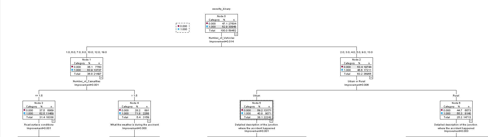

Making the data usable.
I wrote SPSS syntax to import, clean and transform the records, recoded severity, created hour and month variables, and filtered districts with low case counts.
DATA SCIENCE CASE STUDY / UWE BRISTOL
PROJECT AIM
Analyse UK road accident data to identify patterns, understand factors associated with severity, and build a decision tree to classify accidents as slight or severe.
Time, conditions, vehicles & severity
Find patterns in time, weather and road conditions.
Charts & statistical analysisUse a decision tree to classify recorded accidents.
Slight or severe01 / THE CHALLENGE
When do accidents happen most often — and which factors help explain how severe they are?
Our UWE Bristol team combined data preparation, exploratory analysis, statistical testing and a Classification and Regression Tree (CRT) model to investigate UK road accident records.
MY ROLE / ALEX BASHFORD
My work focused on preparing the data, analysing accident patterns and helping develop the SPSS model. I also interpreted the results and explained how the model improved.
I wrote SPSS syntax to import, clean and transform the records, recoded severity, created hour and month variables, and filtered districts with low case counts.
I produced graphs and chi-square tests to explore how severity relates to time, weather and urban or rural location.
I helped address a model that predicted only slight accidents, contributing to target recoding and data balancing so it could identify both classes.
I interpreted and wrote up the results, collaborated through GitLab, and used feedback to improve the model and how we presented it.
A high accuracy score can hide poor detection of severe accidents. I learned to check class balance, support conclusions with statistical evidence, and explain the limitations of the data.
Throughout this project, my main contribution focused on data preparation, exploratory data analysis, and model development using SPSS, as well as interpreting and presenting the results.
I worked extensively with SPSS syntax to import, clean, and transform the dataset. This included recoding variables, grouping accident severity into a binary outcome (serious vs slight), and creating new variables such as hour of day and month. I also reduced dataset complexity by filtering local authority districts with low case counts. These steps improved the quality and usability of the dataset for analysis.
I carried out exploratory data analysis by producing graphs and statistical tests to identify patterns in accident severity. For example, I analysed accidents across time and used chi-square tests to examine relationships between severity and factors such as weather conditions and urban versus rural locations. This helped me understand how statistical evidence supports conclusions rather than relying only on visual patterns.
I was also involved in developing and improving the predictive model. Initially, the model showed high accuracy but predicted all cases as slight accidents. This helped me understand the impact of class imbalance and why accuracy alone can be misleading. To address this, I contributed to recoding the target variable and applying balancing techniques, which improved the model’s ability to classify both slight and serious accidents.
In addition, I contributed to interpreting and writing up the model results, explaining the model performance and the reasons behind the improvements made. This helped me develop my ability to clearly communicate technical findings in a structured and understandable way.
Working as part of a team improved my collaboration skills. We used GitLab to manage our work, share files, and track progress, ensuring that contributions were organised and tasks were completed efficiently.
Feedback played an important role in improving the project. Feedback highlighted issues with model performance and clarity, leading to improvements in both the modelling process and how results were presented. This showed me the importance of refining work based on feedback.
There were also ethical considerations in this project. The dataset was publicly available and did not include personal identifiable information, reducing privacy concerns. However, the lack of behavioural variables, such as driver speed or impairment, may limit model accuracy and introduce bias. This highlights the importance of understanding data limitations.
Overall, this project improved my skills in data analysis, statistical testing, predictive modelling, and communication. It also highlighted the importance of data quality, critical thinking, and continuous improvement.
02 / EXPLORATORY ANALYSIS

Counts are lowest overnight, increase around the morning commute and reach their highest point at 17:00. This describes accident frequency; traffic exposure would be needed to compare risk per journey.
The morning and late-afternoon peaks suggest a connection with daily travel routines.
16:00–18:00 evening peak windowThe project found many serious accidents in fine weather. Higher counts alone do not establish higher risk: the amount of traffic also matters.
Supporting results from the final documentation, based on 304,925 records in the displayed SPSS tables.
Severe cases as a share of accidents within each location, calculated from the report's grouped severity table: 19,275 of 107,725 rural records and 24,963 of 197,200 urban records. Bars use a 0–100% scale.
Reported association: χ²(1) = 1,538.789, p < .001. This is a comparison of recorded accidents, not risk per journey.
View original SPSS table ↗The mean posted speed limit was 2.67 mph higher for the severe group. These values describe the roads where accidents were recorded, not how fast the vehicles were travelling.
Source variable: Speed_limit. The grouped SPSS output labels severe cases as “Serious”.
View original SPSS output ↗03 / THE PROCESS
Clean the records and group variables where needed to make the data suitable for analysis.
Data preparationVisualise time, weather and vehicle patterns. Use cross-tabulation and hypothesis tests to examine relationships.
SPSS + PythonAddress the dominance of slight accidents after early models predicted only the majority class.
Class imbalanceTrain a CRT decision tree and compare its classification performance across training and test samples.
Model evaluation04 / PREDICTIVE MODELLING
The model classifies accidents as slight or severe (fatal or serious). Rebalancing the data helped it identify both classes, instead of defaulting to the most common outcome.

Balancing the dataset made severe outcomes more visible to the model. The project reports similar training and test performance, though this alone does not establish performance on new populations.
Results reflect the balanced study sample. Casualty count is known after a crash, so this is an analysis of recorded accidents, not a validated tool for predicting danger before a journey.
The model scored about 85% by predicting every accident as slight. Its severe-class recall was 0%.
Fatal and serious cases were combined, but the model still predicted only slight accidents.
All severe cases were retained and slight cases were sampled at approximately 15%. The CRT test output reports 61.2% overall accuracy, 64.6% severe recall and 57.3% slight recall.
The original and balanced samples have different class proportions, so the two overall accuracy scores are not a like-for-like comparison. The key improvement is detecting both classes.
Inspect the Test 3 classification table ↗The page uses the Test 3 SPSS output in Prediction Model Report, which agrees with the rounded figures in the final documentation. Accident Severity Prediction reports a different set of figures. The supplied documents do not establish why they differ.
| Document | Accuracy | Severe recall | Slight recall |
|---|---|---|---|
| Prediction Model Report · Test 3 | 61.2% | 64.6% | 57.3% |
| Accident Severity Prediction | 61.6% | 67.3% | 55.1% |
Recall here means the proportion of cases in that observed class that the model classified correctly. These scores describe the study samples, not a validated live prediction service.
Read the source documents ↓05 / THE TAKEAWAY
This project taught me to look beyond a single accuracy score: check the class balance, explain the patterns and be clear about what a model can actually tell us.
06 / SOURCE DOCUMENTS
The literature review shaped the choice of environmental, road and time variables. The reports show how those ideas became an analysis, a series of model tests and a final evaluation.
Scope, preparation, findings, evaluation and personal reflection, with the original figures.
Read the report ↗Public reading copy; student numbers and peer ratings omitted.Three testing stages, SPSS code and classification tables showing how the model changed.
Download testing report ↓Original DOCX · 114 KBMethodology, interpretation and limitations. Contains a different set of reported model scores.
Download model write-up ↓Original DOCX · 17 KBResearch into environment, roads, time and machine learning, with the project's reference list.
Download literature review ↓Original DOCX · 21 KBEXPLORE THE CODE
Browse the SPSS syntax and the team's project repository.
Alex Bashford · Sam Nganga · Hussein Toppozada